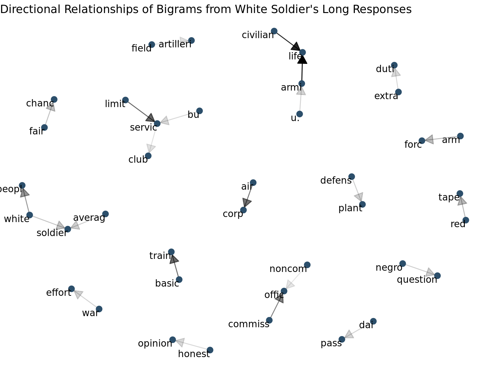

Text-Network Analysis of White & Black Soldiers
This page provides sentiment of race relations from Survey 32.
R sna race relationsIn order to understand topics and words used by soldiers in their textual responses, we used bigrams and co-occurrences to create networks. Bigrams are sets of words that are used immediately next to eachother in a response. For example in the sentence "I run with my dog", "run with" is a bigram. For co-occurrences, the words are correlated with eachother on the response level. For example, in the same sentence, "run" and "dog" are co-occurring even though they do not occur next to eachother in the sentence. We used these two separate levels of analysis to create text networks to understand the words soldiers were using and how they fit together in a larger network of verbage.
Bigrams
We created bigrams for each group of soldiers for each set of responses. From these bigrams we can visualize words that are used in tandem with each other. This is important for understanding compound terms, and is used later on in our analysis when we unionize terms. Each graph displays terms used with arrows of different thicknesses to differentiate the direction of the two words' connection.
Black soldiers' bigram network includes terms that discuss equal rights, the war, jim crow laws, and race within the military. These clusters of bigrams indicate that these words are used immediately following each other in their long commentaries.

White soldiers' bigram networks include terms for the army, the question about black soldiers, and white soldiers.

White soldiers' bigram network from their short commentaries include bigrams in relation to the question, prejudice, and race within the military.

Pro-segregation white soldiers' bigram networks from their short commentaries includes their thoughts on whether or not black and white soldiers would get along in outfits.

Anti-segregation white soldiers' bigram network includes terms relationships, conditions, and race in the military.

Gephi Networks
In order to visualize co-occurrence text networks we utilized gephi, an open-source tool developed for network visualizations. From this we can visulaize and compare words and topics discussed by black and white soldiers in their long responses.
Black soldiers commonly discussed race and quality in the as can be noted by the cerulean blue nodes. They also dicussed democracy and opportunity in the green, as well as space and location in the light orange. These communities of terms are different topics discussed by black soldiers.

Social Networks with Unionized Terminology
Something that is important to us is soldiers' dicussions of inner-outer groups of people. A way that we decided to look at that was by unionizing biterms. For example, a naive co-occurence with "black" may be "people" but we care about the dicussion of "black people" rather than just the identification of "people" as co-occurring with the word "black". To do this we complete several unionizations of biterms to create co-occurrence networks of dicussions of groups of people.
Long Responses
We complete unionized term co-occurences and social networks using long response textual data. We separate our analysis by race and report co-occurences and co-occurence networks for both black and white soldiers. These graphs indicate networks with unionized terms as well as in-group versus out-group barplots to show which words are used at higher co-occurrences with terms for each group of soldiders. For example, black soldiers words that co-occur with terms for black men are terms used to describe in-group discussions. Their words that co-occur with terms for white men describe out-group relationships.
Short Responses
We complete the same unionized-analysis above but using only short-response data from white soldiers. We are unable to get enough data to create plots for the two different groups of white soldiers: pro-segregation and anti-segregation. The following analysis reflects terms used in the entire group of white soldiers. These graphs indicate networks with unionized terms as well as in-group versus out-group barplots to show which words are used at higher co-occurrences with terms for each group of soldiders.